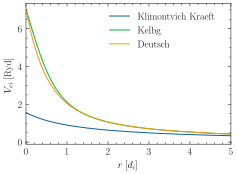

Note
Go to the end to download the full example code
HNC: Electron-Ion Potentials
This example reproduces Figure 4.6 in [Wünsch, 2011], showing the different potentials implemented to treat the electron-ion interaction.
This plot shows quite plainly, notable differences between various models.
Warning
We are not able to reproduce Fig. 4.6 from [Wünsch, 2011]. Even if \(\lambda_{ab}\) is fixed to a forcing the Deutsch Potential to the correct value at \(r = 0\), would need to modify the temperature to match the Klimontvich-Kraeft potential.

[[[-1.32294303]
[ 0.52917721]]
[[ 0.52917721]
[-0.21167088]]] angstrom
import jax.numpy as jnp
import jpu.numpy as jnpu
import matplotlib.pyplot as plt
import jaxrts
from jaxrts import hnc_potentials, ureg
plt.style.use("science")
fig, ax = plt.subplots()
state = jaxrts.PlasmaState(
ions=[jaxrts.Element("He")],
Z_free=[2.5],
mass_density=[
1.23e23 / ureg.centimeter**3 * jaxrts.Element("He").atomic_mass
],
T_e=1e5 * ureg.kelvin,
)
r = jnp.linspace(0, 10, 1000) * ureg.angstrom
KK = hnc_potentials.KlimontovichKraeftPotential()
Kelbg = hnc_potentials.KelbgPotential()
Deutsch = hnc_potentials.DeutschPotential()
KK.include_electrons = "SpinAveraged"
Kelbg.include_electrons = "SpinAveraged"
Deutsch.include_electrons = "SpinAveraged"
# Get lambda_ab from the limit of Deutsch:
# for r-> 0: V_Deutsch -> q1q2/(4 pi eps_0 lam_ab)
# This will only be correct for the ei part!
lambda_ab = -KK.q2(state) / (4 * jnp.pi * ureg.epsilon_0 * 5 * ureg.rydberg)
n = jaxrts.units.to_array([state.n_i[0], state.n_e])
d = jnpu.cbrt(3 / (4 * jnp.pi * (n[:, jnp.newaxis] + n[jnp.newaxis, :]) / 2))
print(lambda_ab.to(ureg.angstrom))
ax.plot(
(r / d[0, 0]).m_as(ureg.dimensionless),
-KK.full_r(state, r)[1, 0, :].m_as(ureg.rydberg),
label="Klimontvich Kraeft",
)
ax.plot(
(r / d[0, 0]).m_as(ureg.dimensionless),
-Kelbg.full_r(state, r)[1, 0, :].m_as(ureg.rydberg),
label="Kelbg",
)
ax.plot(
(r / d[0, 0]).m_as(ureg.dimensionless),
-Deutsch.full_r(state, r)[1, 0, :].m_as(ureg.rydberg),
label="Deutsch",
)
ax.set_xlabel("$r\\; [d_i$]")
ax.set_ylabel("$V_{ei}\\; [\\mathrm{Ryd}]$")
ax.legend()
ax.set_xlim(0, 5.0)
# ax.set_ylim(0, 10)
plt.tight_layout()
plt.show()
Total running time of the script: (0 minutes 2.301 seconds)